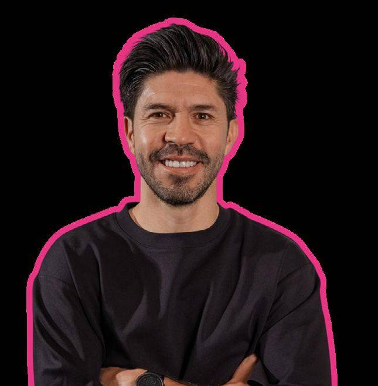
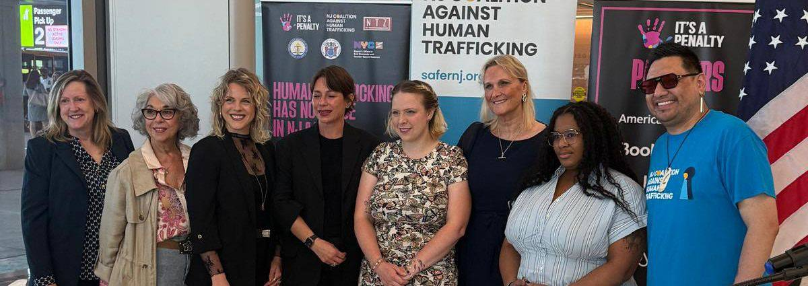
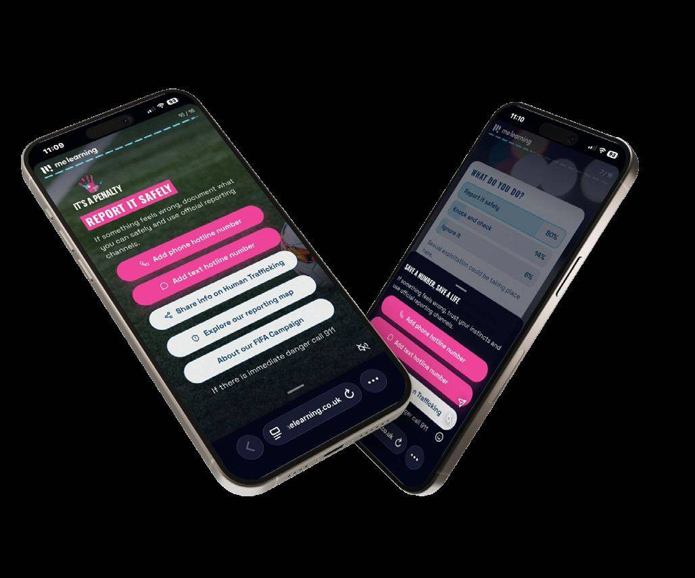
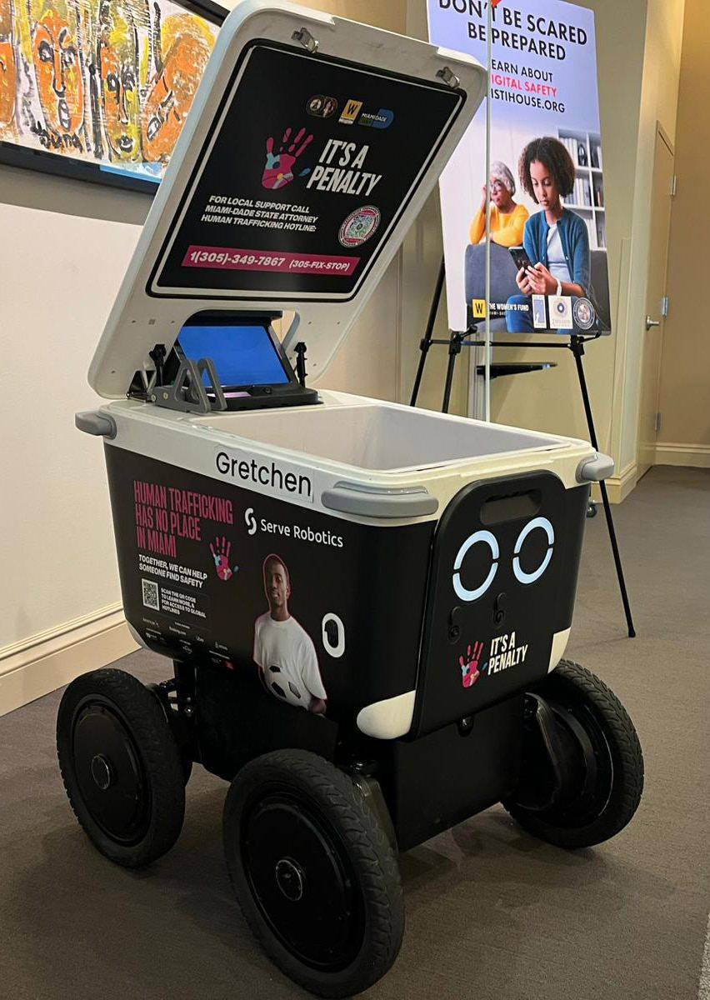

Public awareness
Highly visible trafficking-prevention messaging across airports, transport networks, outdoor advertising, hotels, digital platforms, media, fan events and public spaces.
Impact report · North America
The largest World Cup ever staged. Three host countries, 16 host cities, and It's a Penalty's largest campaign to date against human trafficking and exploitation.

FIFA World Cup 2026 presented an unprecedented opportunity to mobilise action against human trafficking and exploitation across the largest and most geographically dispersed World Cup in history. Building on more than a decade of experience delivering campaigns around major sporting events, It's a Penalty (IAP) delivered its largest campaign to date across the United States, Mexico and Canada.
IAP's model goes beyond public awareness. It uses the unique mobilisation created by major sporting events to bring together businesses, governments and public authorities, survivor leaders, specialist civil society organisations, transport and hospitality providers and communities, connecting large-scale awareness with locally led prevention, reporting and response.
Campaign messaging reached people through airports, transport networks, outdoor advertising, hotels, airlines, digital platforms, media, fan events and public spaces across the three host countries.
Impact at a glance
* These safeguarding outcomes formed part of wider law-enforcement and multi-agency responses and cannot be attributed directly to It's a Penalty.
Post-campaign evaluation. Scale alone was not the measure of success.
The campaign
The opportunity was not simply to run an awareness campaign alongside the event. It was to use the World Cup as a platform to mobilise action against human trafficking at scale, shaped by local expertise and connected to existing routes to support.
Highly visible trafficking-prevention messaging across airports, transport networks, outdoor advertising, hotels, digital platforms, media, fan events and public spaces.
Country and locally relevant reporting information, alongside a mobile-first micro-awareness tool helping people recognise potential exploitation and understand what to do next.
Training and learning for people working in sectors that may encounter exploitation, particularly hospitality and travel.
Campaign development and delivery informed by survivor leaders, specialist organisations and locally led partners, so messaging reflected local context.
Global companies, public authorities, transport and hospitality networks and civil society mobilised their platforms, people, expertise and resources around a shared objective.
Our ambassadors
Their time, support and commitment helped us reach more people with vital information about human trafficking and exploitation.

With thanks to Steven Caldwell, campaign influencer, Canada.
As a relatively small organisation delivering an ambitious campaign across three countries, It's a Penalty relied on partners not simply to amplify the campaign, but to make delivery at this scale possible. Their financial contributions funded the work, while in-kind support enabled the team to travel for Congresses, planning workshops and launches across the host countries.
Many of these organisations are competitors in their everyday business. Through this campaign they came together around a shared commitment to preventing human trafficking and exploitation.

Uber drivers reached, by country
Host cities
There was deliberately no single delivery model. In some locations IAP worked through established coalitions; elsewhere the World Cup created the impetus for new partnerships. In some markets local organisations led mobilisation, in others IAP took a formal coordinating role.
Innovation in action

01A mobile-first tool promoted through geo-targeted social ads around trafficking hotspots. IHG also integrated it into colleague learning.

02Autonomous delivery robots carried campaign messaging through the streets of Miami and Los Angeles, activations secured by The Women's Fund Miami-Dade.
Developed by Parasol Cooperative with survivors and advocates: a private, trauma-informed space for people who may not feel able to make a phone call.
Survey findings
Before seeing the campaign, 66% of respondents did not know or were unsure where to report suspected trafficking.
learned how or where to report suspected trafficking
learned something new about how common trafficking is
learned a trafficking sign they had not previously recognised
learned about the connection between trafficking, travel, hospitality and major sporting events
intended to note down a reporting number or website
The greatest impact was among those who needed it most
of those unsure where to report beforehand learned how or where to report.
of those who knew no specific signs learned one they hadn't recognised.
Learned how/where to report
More confident recognising trafficking
Very likely to report
235 responses after data cleaning (US n=113, Canada n=112, Mexico n=10). Results are self-reported knowledge, confidence and intention, not observed behaviour. Mexico findings are indicative only.
Training & preparedness
Frontline capability is not simply about recognising the signs of trafficking. It is about changing how potential exploitation is understood, and how people respond when they encounter it.
Learning and what comes next
Allow time to build trust, understand local systems and involve lived experience from the outset.
Work through and strengthen existing expertise, relationships and response structures rather than applying a single delivery model.
Combine memorable signs of exploitation with clear, immediate routes to reporting and support.
Equip frontline sectors and institutions to recognise potential exploitation and respond in a victim-centred way.
Use the event as a catalyst for relationships, knowledge and systems that continue after the tournament.
The ambition is not simply to make each campaign bigger, but deeper, more locally rooted and more capable of creating change that lasts beyond the final whistle.